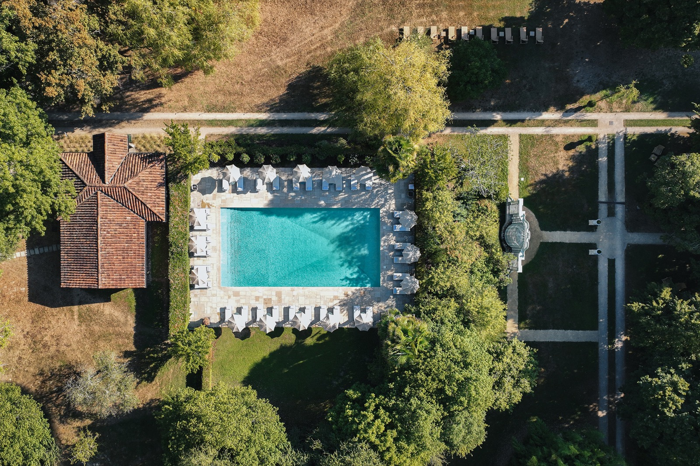

Week-end spa en France : 9 adresses, et ce qu'un week-end y coûte vraiment
Deux nuits, c'est le format réel du séjour bien-être en France, et personne ne le
chiffre honnêtement. Neuf maisons reprises avec la note que nous leur avons déjà
donnée, le prix relevé pour la nuit, et ce que le spa ajoute ou n'ajoute pas à
l'addition. Plus une adresse célèbre que nous retirons de la sélection.
Par Swann Bertaud, rédacteur hôtellerie de luxe✺Publié le 11 août 2026✺17 min de lecture
L'Hôtel Royal, Evian Resort, première adresse de notre palmarès national des
hôtels et spas de France avec 19,2/20. Sa distinction Palace vient d'être renouvelée par
Atout France, et il accueille le sommet du G7 en juin 2026. Photo : Evian Resort.
TL;DR : l'essentielNeuf adresses, deux échelles de note, une adresse retirée
Hôtel Royal, Evian Resort, 19,2/20 au Protocole LMHS :
la meilleure note du site, un evian Spa de 1 700 m² face au Léman,
et la distinction Palace renouvelée. Nuit à partir de 450 €.
Les Sources de Caudalie, 18,5/20 :
2 200 m² de vinothérapie dans les vignes de Château Smith Haut
Lafitte, et le meilleur rapport note-prix de cette page à 380 €.
Thalazur Carnac, Hôtel Les Salines, 14,0/20 :
la porte d'entrée du week-end spa, 240 € la nuit, à cent mètres de
la plage et à deux kilomètres des alignements.
Le retrait : le Château de Bagnols,
que le brief de cette page plaçait cinquième, ne prend plus de clients à la
nuit. Depuis janvier 2026, le domaine s'est réorienté vers la privatisation
événementielle. Nous le sortons de la sélection et expliquons pourquoi plus bas.
Cette page ne crée aucune note nouvelle
C'est le principe de départ, et il mérite d'être posé avant le tableau. Sept de ces
neuf maisons ont déjà été notées par la rédaction, dans notre
palmarès national des 50 meilleurs hôtels et spas de France
ou dans nos classements régionaux. Nous reprenons ces notes à l'identique.
Recalculer un score parce qu'on change l'angle d'un article, c'est fabriquer un chiffre,
pas mesurer quelque chose.
Deux échelles cohabitent donc dans le tableau, et il faut savoir les lire, parce
qu'elles ne disent pas la même chose :
Le Protocole LMHS, sur 20, engage notre présence sur place. Quatre
piliers de 5 points, Luxe, Mise en scène, Hospitalité et Soin, notés après une visite
anonyme dont la nuit et les soins sont payés par la rédaction.
La grille LMHS Destination, sur 10, s'applique sur données
publiques, sans visite. C'est le cas de l'hôtel Brach.
« Non noté » veut dire ce qu'il dit. Deux maisons de cette page,
le Domaine du Mas de Pierre et le Domaine des Étangs, entrent au catalogue sans note
parce qu'aucune des deux grilles n'a encore été passée.
Les deux notes ne se convertissent pas l'une dans l'autre, et le
tableau ne les mélange pas dans un classement unique. Il est trié par note, échelle par
échelle, ce qui explique que l'hôtel Brach figure après les maisons notées sur 20 sans
que cela dise quoi que ce soit de sa qualité relative. Le détail des deux grilles est
dans notre méthode.
Le tableau : neuf adresses, la note, la nuit et les deux nuits
Rang
Adresse
Région
Type de spa
Note LMHS
Nuit
Deux nuits
01
Hôtel Royal, Evian Resort
Alpes, lac Léman
Spa d'hôtel, 1 700 m²
19,2/20
450 €
900 €
02
Les Sources de Caudalie
Bordeaux, Martillac
Vinothérapie, 2 200 m²
18,5/20
380 €
760 €
03
Terre Blanche
Provence, Var
Spa de resort, 3 200 m²
18,1/20
520 €
1 040 €
04
Airelles Gordes, La Bastide
Luberon
Spa privatif en suite
17,6/20
790 €
1 580 €
05
Les Prés d'Eugénie
Landes
Thermalisme
15,0/20
420 €
840 €
06
Thalazur Carnac, Les Salines
Morbihan
Thalassothérapie
14,0/20
240 €
480 €
07
Hôtel Brach Paris
Paris 16e
Spa urbain, 2 piscines
7,9/10
≈ 500 €
≈ 1 000 €
08
Le Domaine du Mas de Pierre
Saint-Paul-de-Vence
Spa de 2 000 m², accès inclus
non noté
n. c.
n. c.
09
Domaine des Étangs
Charente
Spa Le Moulin, 1 000 ha
non noté
n. c.
n. c.
Notes reprises de nos parutions antérieures, sans recalcul. Prix d'appel
pour une chambre double en basse saison, repris du palmarès national et relevés en
juillet 2026. La colonne « deux nuits » est le simple doublement de ce prix d'appel,
hors soins, hors table et hors haute saison : c'est un plancher, pas un devis.
Les neuf adresses, une par une
01
Hôtel Royal, Evian Resort, Haute-Savoie 19,2/20
Pour qui : le week-end où l'on ne veut discuter de rien. C'est la
meilleure note de tout le site, et elle est méritée.
Ouvert en 1909 au-dessus du Léman, dans un parc de dix-neuf hectares, le Royal
aligne 150 chambres dont 32 suites de prestige et un
evian Spa de 1 700 m² entièrement reconstruit, organisé autour du
cycle de l'eau. Sa distinction Palace vient d'être renouvelée par Atout
France, et le calendrier 2026 lui donne une actualité que peu d'hôtels
peuvent revendiquer : il accueille le sommet du G7 en juin, pour la
deuxième fois de son histoire. Le lac d'un côté, les Alpes de l'autre, et un service
d'une précision qui explique à elle seule les 19,2.
Le bémol LMHS : la semaine du G7, en juin 2026, l'établissement
sera fermé à la clientèle de loisirs, et les dates qui l'encadrent se réservent déjà.
Si vous visez juin, prenez vos renseignements avant de bloquer un train.
19,2/20 au Protocole LMHS · Nuit à partir de 450 € · Spa 1 700 m² ·
150 chambres dont 32 suites · Distinction Palace ·
Site officiel →
02
Les Sources de Caudalie, Martillac 18,5/20
Pour qui : le meilleur rapport entre la note et l'addition de
cette page, et de loin. 18,5/20 pour 380 € la nuit.
C'est ici qu'est né le mot vinothérapie, au milieu des vignes de Château Smith
Haut Lafitte, et l'idée n'a pas vieilli : 2 200 m² de spa, bain
barrique, gommage au marc de raisin, enveloppements à la vigne rouge. Les bâtiments
de bois posés autour de l'étang tiennent du hameau plus que de l'hôtel, ce qui
change complètement le rythme d'un week-end. La table gastronomique et le bistrot des
vignes couvrent les deux soirs sans qu'on ait à sortir du domaine.
Le bémol LMHS : le spa se privatise, mais la demande dépasse
largement l'offre de créneaux le samedi. Réservez le soin en même temps que la
chambre, pas après : c'est la seule façon d'avoir le créneau que vous voulez.
18,5/20 au Protocole LMHS · Nuit à partir de 380 € · Spa 2 200 m² ·
Vinothérapie · Vignoble de Château Smith Haut Lafitte ·
Site officiel →
03
Terre Blanche, Tourrettes 18,1/20
Pour qui : le week-end à deux où chacun veut faire autre chose,
et le plus grand spa de cette sélection.
Trois cents hectares dans l'arrière-pays varois, 115 suites et
villas dispersées dans la garrigue, et un spa de 3 200 m²
qui reste l'un des plus vastes de France : bassins, hammams, saunas, parcours
aquatique. La particularité tient à la cohabitation, réussie, avec
deux parcours de golf 18 trous de championnat, ce qui règle la
question du samedi après-midi quand les deux voyageurs ne cherchent pas la même
chose. Membre des Leading Hotels of the World.
Le bémol LMHS : l'échelle du domaine se paie en déplacements
intérieurs. Entre une villa excentrée, le spa et le restaurant, on prend la voiturette
plusieurs fois par jour, et l'ambiance tient davantage du resort que de la maison.
18,1/20 au Protocole LMHS · Nuit à partir de 520 € · Spa 3 200 m² ·
115 suites et villas · Deux golfs 18 trous · 300 hectares ·
Site officiel →
04
Airelles Gordes, La Bastide 17,6/20
Pour qui : le spa privatif permanent, celui qui est dans la suite
et pas au bout d'un couloir.
C'est la seule adresse de cette page qui figure aussi dans notre sélection des
hôtels avec spa privatif, et pour une
bonne raison : les suites supérieures ont leur jacuzzi sur terrasse, face au
Luberon, accessible à toute heure sans réserver quoi que ce soit. La bastide,
accrochée aux remparts du XIIe siècle, a été reprise par Airelles au terme
d'un chantier de 33 millions d'euros, et le résultat se voit sur les matériaux comme
sur le service.
Le bémol LMHS : 790 € la nuit en basse saison, c'est le tarif le
plus élevé de cette sélection, et le spa privatif n'existe que dans les catégories
supérieures. En chambre d'entrée de gamme, vous payez la vue, pas le jacuzzi.
Gordes, par ailleurs, sature en juillet et en août.
17,6/20 au Protocole LMHS · Nuit à partir de 790 € · Spa privatif
permanent en suite supérieure · Remparts du XIIe · Vue Luberon ·
Site officiel →
05

Les Prés d'Eugénie, Eugénie-les-Bains 15,0/20
Pour qui : le week-end où la table compte autant que le soin.
C'est la seule adresse trois étoiles Michelin de cette page.
La maison landaise de Michel Guérard tient ses trois étoiles depuis
1977, et le guide 2026 les lui a conservées. C'est une
information qui mérite d'être dite clairement : Michel Guérard est mort en
août 2024, et la maison est aujourd'hui conduite par ses filles Éléonore et
Adeline, avec le chef Hugo Souchet aux fourneaux. La transition
avait été préparée dès 2021 par une refonte du restaurant et de la carte, et elle a
tenu. Autour, le thermalisme d'Eugénie-les-Bains, la ferme thermale et une cuisine
minceur inventée ici il y a cinquante ans.
Le bémol LMHS : c'est une maison de cure autant qu'un hôtel, et le
rythme s'en ressent. On y croise une clientèle de curistes en programme long, ce qui
donne au lieu une atmosphère très différente d'un resort. Nos deux publications se
contredisent par ailleurs sur le prix d'appel, 420 € au palmarès national et 296 € au
classement des 5 étoiles : nous retenons ici le premier, et l'écart est en cours de
vérification.
15,0/20 au Protocole LMHS · Nuit à partir de 420 € · Trois étoiles
Michelin depuis 1977, conservées au guide 2026 · Chef Hugo Souchet · Thermalisme ·
Site officiel →
06
Thalazur Carnac, Hôtel Les Salines 14,0/20
Pour qui : le premier week-end spa, celui qu'on s'offre sans
arbitrage budgétaire. 240 € la nuit, le tarif le plus bas de cette page.
Quatre étoiles à cent mètres de la plage, entre l'océan et les marais salants, avec
une thalassothérapie qui fait le vrai travail : eau de mer chauffée, algues bretonnes,
boues marines, douches à jet, parcours aquatique. Trois restaurants sur place. Et une
situation que personne ne peut copier, à deux kilomètres des alignements
mégalithiques, ce qui donne au dimanche matin un programme que la plupart des
adresses de cette page ne peuvent pas offrir.
Le bémol LMHS : c'est une thalasso, donc une expérience collective,
avec les horaires et l'affluence qui vont avec. Carnac-Plage sature en juillet et en
août, et l'établissement vit beaucoup sur la notoriété de son site. Nos pages donnent
par ailleurs 240 € au palmarès breton et 300 € au classement des thalassos du Sud :
c'est le tarif breton, relevé sur place, qui fait foi.
14,0/20 au Protocole LMHS · Nuit à partir de 240 € · 4 étoiles ·
Thalassothérapie, eau de mer et algues · 100 m de la plage ·
Site officiel →
07
Hôtel Brach, Paris 16e7,9/10
Pour qui : le week-end spa sans gare ni autoroute. C'est la seule
adresse urbaine de la sélection, et elle est notée sur une autre échelle.
Signé Philippe Starck pour la collection Evok, dans un ancien
centre de tri postal des années 1930, le Brach aligne 59 chambres et
6 suites sur 7 000 m². Le club de sport et le spa, où les soins sont signés
Clarins, comptent deux piscines intérieures dont une de 22 mètres,
sauna, hammam et grotte de sel. Le toit-terrasse, planté d'un potager, regarde
directement la tour Eiffel. À dix minutes du Trocadéro, c'est le
week-end qu'on décide le jeudi soir.
Le bémol LMHS : la note de 7,9/10 vient de la grille Destination,
c'est-à-dire de données publiques, sans visite de contrôle : elle ne se compare pas
aux notes sur 20 de cette page. Et un spa urbain, aussi bien équipé soit-il, ne
procure pas le silence d'un domaine à la campagne. Les piscines sont à l'intérieur,
pas sur le toit.
7,9/10 à la grille LMHS Destination · Nuit autour de 500 € ·
59 chambres et 6 suites · Deux piscines dont une de 22 m · Soins Clarins ·
Toit-terrasse vue tour Eiffel ·
Site officiel →
08
Le Domaine du Mas de Pierre, Saint-Paul-de-Vence non noté
Pour qui : le week-end azuréen où l'accès au spa ne se
transforme pas en ligne supplémentaire sur la note.
Cinq étoiles Relais & Châteaux au pied du village d'art,
76 chambres et suites réparties en neuf bastides dans un jardin
méditerranéen, toutes rénovées en 2021 et toutes dotées d'un espace extérieur. Le
spa de 2 000 m² aligne sauna aux herbes, sauna au sel et grotte de
neige, et surtout son accès est compris dans le séjour, de
l'arrivée au départ, piscines et lagon inclus. Sur un week-end de deux nuits, cette
seule ligne change l'arithmétique. La table de Pierre porte une étoile Michelin.
Le bémol LMHS : la maison entre au catalogue sans note, faute
d'avoir passé l'une de nos deux grilles. Nous la citons pour ce que ses données
publiques établissent, pas pour un classement que nous n'avons pas fait.
Non noté à ce jour · 76 chambres et suites · 9 bastides ·
Spa 2 000 m², accès inclus · Restaurant étoilé · Relais & Châteaux ·
Site officiel →
09
Domaine des Étangs, Massignac non noté
Pour qui : la déconnexion réelle, celle qui suppose de ne croiser
personne pendant deux jours.
Mille hectares de forêts, de prairies et d'étangs en
Charente-Limousine, autour d'un château dont le donjon remonte au XIe
siècle. Trente clés seulement, dix-huit chambres et douze suites,
réparties entre le château, une longère et six métairies restaurées. Le spa
Le Moulin occupe un ancien moulin au bord de l'eau, la table
Dyades porte une étoile Michelin, et le domaine ajoute une piscine
intérieure ouverte toute l'année, des barques et un court de tennis posé au-dessus de
l'eau. Trente clés pour mille hectares : c'est le ratio le plus favorable de cette page.
Le bémol LMHS : non noté, comme le Mas de Pierre, et réellement
isolé. Il faut une voiture, et accepter que les deux soirs se passent sur place.
Non noté à ce jour · 1 000 hectares · 18 chambres et 12 suites ·
Spa Le Moulin · Restaurant étoilé Dyades · Auberge Resorts Collection ·
Site officiel →
L'adresse que nous retirons : le Château de Bagnols
Le brief de cette page plaçait le Château de Bagnols en cinquième position, et
l'argument se tenait : un château du XIIIe siècle classé Monument historique
dans le Beaujolais, à trente minutes de Lyon, avec un spa contemporain. Nous l'avons
nous-mêmes noté 14,7/20 dans notre sélection des hôtels avec spa
privatif.
Vérification faite, il ne peut plus figurer dans une sélection de week-end.
Le 15 janvier 2026, le groupe Lavorel Hôtels, propriétaire du domaine depuis
juin 2012, a annoncé l'abandon de l'hôtellerie classique au profit de la
privatisation intégrale : mariages, séminaires, galas, tournages. Le château entier se
loue désormais à l'occasion, salons historiques et jardins compris. Autrement dit, un
lecteur qui cherche deux nuits en chambre double pour un week-end de novembre ne trouvera
pas de porte d'entrée.
Nous le sortons donc de cette page, et nous signalons que deux de nos
parutions antérieures le citent encore comme une adresse à la nuit : notre sélection des
hôtels avec spa privatif et notre palmarès des
meilleurs hôtels de Lyon. Les deux seront mises
à jour. C'est exactement le genre de changement qu'un palmarès annuel ne voit pas passer,
et la raison pour laquelle une page de sélection doit être revérifiée avant chaque
republication.
Le mot de SwannLe prix d'un week-end spa ne se lit pas sur la ligne « nuit »
La
question qu'on nous pose le plus souvent n'est pas « quel est le meilleur spa de
France », c'est « combien je paie pour deux nuits ». Or le prix d'appel ne répond
jamais à cette question, parce qu'il ne dit pas si l'accès au spa est compris.
Deux maisons de cette page l'incluent explicitement du check-in au check-out,
et cela vaut plus qu'un demi-point de note. Mon conseil tient en une phrase :
avant de comparer deux tarifs, demandez par écrit ce que couvre l'accès au spa, quels
créneaux sont ouverts le samedi, et si les soins doivent se réserver au moment de la
chambre. Sur Caudalie comme sur Gordes, la réponse à cette troisième question décide de
votre week-end plus sûrement que les cinquante euros d'écart sur la nuit.
Swann Bertaud, rédacteur hôtellerie de luxe
Quel budget pour un week-end spa en France
Les prix de cette page vont de 240 € la nuit à Carnac à
790 € à Gordes, soit 480 € à 1 580 € pour deux nuits,
hors soins et hors table. Ce sont des prix d'appel en basse saison, pour une chambre
double, relevés en juillet 2026 : en août, sur la côte comme dans le Luberon, ils
doublent couramment.
Trois lignes s'ajoutent presque toujours, et ce sont elles qui font l'écart entre le
budget prévu et l'addition réelle :
L'accès au spa. Compris dans le séjour chez certains, en supplément
ou par créneau chez d'autres. C'est la première question à poser.
Les soins. Ils ne sont jamais inclus dans un prix d'appel, et un
duo d'une heure engage un budget à part entière.
La table. Sur les adresses étoilées de cette page, le dîner pèse
autant que la nuit.
Pour un premier week-end sans arbitrage douloureux, la thalasso bretonne reste la porte
d'entrée la plus honnête du marché, et notre
palmarès des thalassos de Bretagne en compare
onze sur la même grille. À l'autre bout, si c'est le spa dans la chambre que vous
cherchez, c'est notre page sur les
hôtels avec spa privatif qu'il faut lire, pas
celle-ci : douze adresses y sont classées sur ce seul critère.
Spa privatif, privatisable ou collectif : la distinction qui compte
Trois mots circulent pour trois réalités très différentes, et les moteurs de
réservation les emploient indifféremment.
Le spa privatif permanent est dans votre chambre ou sur votre
terrasse. Il est à vous vingt-quatre heures sur vingt-quatre, sans réservation et sans
supplément. Dans cette sélection, seules les suites supérieures d'Airelles Gordes le
proposent.
Le spa privatisable est un espace commun que l'on réserve pour un
créneau d'une à deux heures, en supplément. C'est la formule la plus répandue en France,
et celle des Sources de Caudalie.
Le spa collectif est partagé, et c'est souvent le mieux équipé :
3 200 m² à Terre Blanche, 2 200 m² à Caudalie, 2 000 m² au Mas de Pierre, 1 700 m² au
Royal d'Évian. On y échange l'intimité contre l'équipement. Sur un week-end de deux
nuits, c'est un arbitrage réel, et il n'a pas de bonne réponse générale.
Quand partir
De la mi-septembre à la fin novembre, et de janvier à mars : ce sont
les deux fenêtres où le rapport entre le tarif et l'affluence est le meilleur, et où un
spa prend tout son sens. Les tarifs de cette page sont d'ailleurs des tarifs de basse
saison, donc ceux de ces périodes-là.
Mai, juin et début septembre offrent le meilleur compromis si vous
voulez aussi profiter de l'extérieur, avec une réserve pour juin 2026 côté Évian, où le
G7 mobilise l'Hôtel Royal. Juillet et août sont à éviter à Gordes et à
Carnac, où les villages saturent bien avant les hôtels.
FAQ : week-end spa en France
Quel budget prévoir pour un week-end spa en France ?
Sur les adresses de cette page, le prix d'appel de la nuit va de
240 € à Thalazur Carnac à 790 € à Airelles Gordes,
soit 480 € à 1 580 € pour deux nuits en chambre double, en basse
saison, hors soins et hors restaurant. Il faut ensuite ajouter l'accès au spa quand il
n'est pas compris, les soins, qui ne le sont jamais dans un prix d'appel, et la table.
En haute saison, ces tarifs doublent couramment sur la côte et dans le Luberon.
Quelle est la meilleure adresse pour un week-end spa en France ?
Sur notre échelle, c'est l'Hôtel Royal, Evian Resort, noté
19,2/20 au Protocole LMHS, soit la meilleure note du site : un
evian Spa de 1 700 m² au-dessus du lac Léman, 150 chambres, et une distinction Palace
renouvelée par Atout France. Si le critère est le rapport entre la note et le prix, ce
sont Les Sources de Caudalie, 18,5/20 pour 380 € la nuit.
Quelle différence entre spa privatif, privatisable et collectif ?
Un spa privatif permanent se trouve dans la chambre ou sur la
terrasse, accessible 24 h/24 sans réservation ni supplément. Un
spa privatisable est un espace commun que l'on réserve pour un
créneau d'une à deux heures, en supplément. Un spa collectif est
partagé avec les autres clients, et c'est généralement le mieux équipé : les quatre
plus grands spas de cette sélection, de 1 700 à 3 200 m², sont tous collectifs.
L'accès au spa est-il compris dans le prix de la nuit ?
Pas systématiquement, et c'est la première question à poser. Au
Domaine du Mas de Pierre, l'accès au spa, aux piscines et au lagon
est compris dans le séjour, de l'arrivée au départ. Ailleurs, il peut être facturé au
créneau ou réservé aux catégories supérieures. Comme les soins ne sont jamais inclus
dans un prix d'appel, deux tarifs de nuit identiques peuvent aboutir à des additions
très différentes.
Quand partir pour un week-end spa en France ?
De la mi-septembre à fin novembre et de janvier à
mars : ce sont les deux fenêtres de basse saison, celles auxquelles
correspondent les tarifs de cette page. Mai, juin et début septembre offrent le
meilleur compromis si vous voulez aussi profiter de l'extérieur. Évitez juillet et
août à Gordes et à Carnac, où les villages saturent, et notez qu'en juin 2026 l'Hôtel
Royal d'Évian accueille le sommet du G7.
Peut-on encore séjourner au Château de Bagnols pour un week-end ?
Non. Le 15 janvier 2026, Lavorel Hôtels, propriétaire du domaine
depuis juin 2012, a annoncé l'arrêt de l'hôtellerie classique au profit de la
privatisation événementielle : le château entier se loue désormais
pour des mariages, des séminaires, des galas ou des tournages. C'est la raison pour
laquelle nous l'avons retiré de cette sélection, alors que nous l'avions noté
14,7/20 dans notre page sur les hôtels avec spa privatif.
Pourquoi certaines adresses sont-elles notées sur 20 et d'autres sur 10 ?
Parce que les deux notes ne mesurent pas la même chose. Le
Protocole LMHS sur 20 suppose une visite anonyme, payée par la
rédaction, et note quatre piliers de 5 points : Luxe, Mise en scène, Hospitalité,
Soin. La grille LMHS Destination sur 10 s'applique sur données
publiques, sans visite. Les deux échelles ne se convertissent pas
l'une dans l'autre, et deux adresses de cette page ne portent aucune note parce
qu'aucune des deux grilles ne leur a encore été appliquée.
Les hôtels spa acceptent-ils les enfants ?
Les hôtels, oui. Les espaces spa, rarement, et les règles varient d'une maison à
l'autre : la limite d'âge se situe le plus souvent à l'adolescence, avec des créneaux
familiaux dédiés dans les établissements de type resort. Aucune règle commune
n'existe, et aucun des établissements de cette page ne publie la même. Posez la
question à la réservation plutôt que de vous fier à un comparateur.
Méthode et sources
Neuf adresses retenues pour un séjour de deux nuits en France.
Cette page ne produit aucune note nouvelle : les sept établissements
déjà classés reprennent à l'identique la note publiée dans notre palmarès national des
50 meilleurs hôtels et spas de France ou dans nos classements régionaux, soit au
Protocole LMHS sur 20 après visite anonyme, soit à la grille LMHS Destination sur 10 sur
données publiques. Les deux échelles ne se convertissent pas et le tableau ne les
fusionne pas. Deux maisons, le Domaine du Mas de Pierre et le Domaine des Étangs,
figurent sans note : aucune des deux grilles ne leur a été appliquée, et nous le disons
plutôt que d'inventer un chiffre. Les prix sont les prix d'appel en chambre double
basse saison déjà publiés, relevés en juillet 2026 ; la colonne « deux nuits » est leur
simple doublement, hors soins et hors table. Caractéristiques des établissements,
surfaces de spa, nombres de clés et distinctions vérifiés en août 2026 sur les sites
officiels et sur les sources professionnelles. Aucun partenariat commercial, aucune
affiliation, aucun voyage offert.